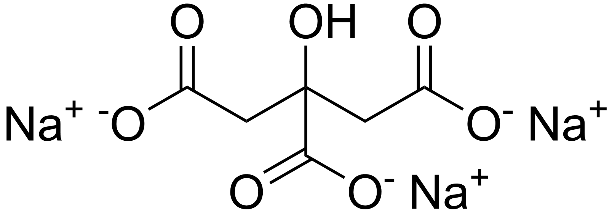

- Silver nitrate (\(AgNO_3\)) is commonly used as a precursor for silver nanoparticles.
- Trisodium citrate (TSC) (\(Na_3 C_6 H_5 O_7\)) acts as both a reducing agent and a stabilizer.

Experimental Procedure
- Prepare 25 mL of 0.001 M \(AgNO_3\) solution using distilled water.
- Prepare 25 mL of 1% trisodium citrate solution in distilled water.
- Transfer the \(AgNO_3\) solution into a round bottom flask and stir continuously at 100-130 \(^\circ\)C using a magnetic stirrer.
- Heat the \(AgNO_3\) solution until it begins to boil and cover the flask with aluminum foil to prevent photodecomposition.
- Add the trisodium citrate solution dropwise into the boiling \(AgNO_3\) solution using a syringe.
- Continue addition until the solution changes color to pale yellow, indicating the formation of silver nanoparticles.
- Allow the solution to cool to room temperature.
Lab Questions and Answers
Silver nitrate \((AgNO_3)\) is a common precursor because it readily dissociates into \(Ag^+\) ions in solution, which can be easily reduced to \(Ag^0\) atoms under mild conditions.
Trisodium citrate acts as both a reducing agent (converts \(Ag^+\) to \(Ag^0\)) and a capping/stabilizing agent, prevents aggregation of nanoparticles.
Trisodium citrate acts as a reducing agent by donating electrons to convert \(Ag^+\) ions into \(Ag^0\) atoms. It acts as a stabilizing agent by adsorbing onto the surface of growing nanoparticles through its carboxylate groups, creating electrostatic repulsion that prevents aggregation.
Silver nanoparticles (AgNPs) are synthesized because their tiny size and high surface area give them unique properties, such as strong antimicrobial activity and optical effects (surface plasmon resonance), which bulk silver lacks. They are used in various applications, including antimicrobial coatings for medical devices and wound dressings, biosensors for diagnostics, catalysts for chemical reactions, conductive inks for flexible electronics, and water purification systems.
The color change occurs due to surface plasmon resonance (SPR), where silver nanoparticles absorb and scatter light at specific wavelengths as they form and grow, shifting from pale yellow to brownish-yellow or reddish-brown depending on particle size and shape.
Surface Plasmon Resonance (SPR) is the collective oscillation of conduction electrons on a metal nanoparticle's surface when excited by incident light at a specific wavelength, causing strong light absorption and scattering.
The SPR peak confirms the formation of silver nanoparticles, and its position (wavelength) and shape indicate particle size, shape, aggregation state, and dielectric environment.
- Concentration of \(Ag^+\) and citrate, higher citrate gives smaller particles.
- Temperature, higher temperature generally gives smaller, more uniform particles.
- pH of solution, alkaline pH produces smaller particles.
- Reaction time, longer time can lead to particle growth.
- Mixing speed, faster mixing gives more uniform nucleation.
- Presence of capping agents.
Temperature control is critical in the hot injection method because it ensures uniform nucleation by rapidly reaching the required reduction temperature, preventing secondary nucleation or particle growth, which leads to monodisperse nanoparticles with consistent size and shape.